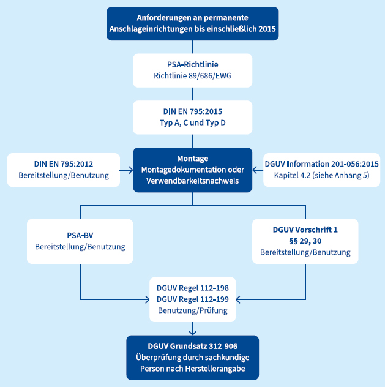
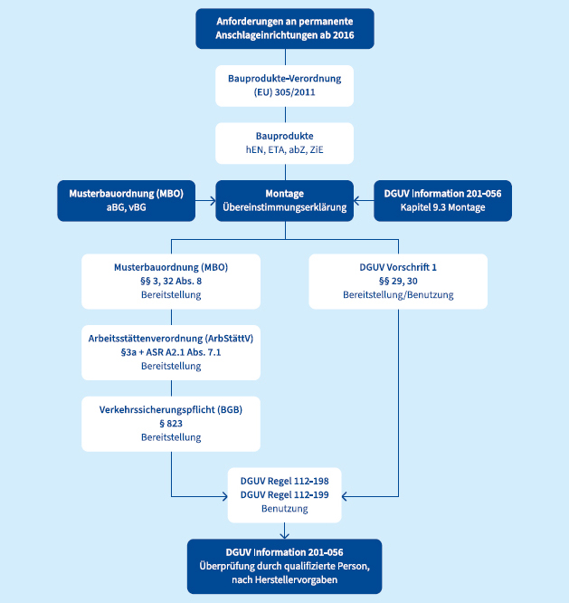

Umwehrungen und Geländer sind durch ihre Bauweise wenig fehleranfällig. Witterung, nicht bestimmungsgemäße Verwendung, schadhaft wirkende Anbauteile und weitere Einflüsse können aber auch hier zu einem Risiko werden.
Um sicherheitsrelevanten Mängeln vorzubeugen und die Schutzwirkung zu gewährleisten, sollte bei Umwehrungen und Geländern in einem zeitlichen Abstand von maximal 24 Monaten eine Sichtkontrolle erfolgen.
Die Sicherheit und Funktionsfähigkeit von Seitenschutzsystemen nach DIN EN 13374 wird durch den Auf- und Abbau nach Herstelleranweisungen gewährleistet. Sollten Seitenschutzsysteme (Ausstattungsklasse A) über einen längeren Zeitraum an der gleichen Stelle verbleiben, sind geeignete Maßnahmen zur Instandhaltung zu treffen, siehe 6.7.1.
Um schadhaften Einflüssen durch Witterung, Temperatur, bestimmungsgemäße Verwendung oder nicht bestimmungsgemäße Benutzung entgegenzuwirken, sollte eine wiederkehrende Prüfung sowie Prüfung nach außergewöhnlichen Ereignissen durch eine zur Prüfung befähigte Person (für temporären Seitenschutz) durchgeführt werden.
Personen mit Betreiberverantwortung haben zu jedem Zeitpunkt sicherzustellen, dass die Systeme einsatzbereit und sicher benutzbar sind.
Die wiederkehrende Prüfung als Sicht- und Funktionskontrolle sollte in einem zeitlichen Abstand von maximal 24 Monaten und spätestens vor der Benutzung durchgeführt werden.
Die Funktionssicherheit der Anschlageinrichtungen ist durch den Betreiber während der Lebensdauer der Produkte sicherzustellen. Die entsprechende Verpflichtung resultiert aus der Betreiberverantwortung. Um dieser Verpflichtung nachzukommen, empfiehlt sich eine regelmäßige Prüfung und Instandhaltung. Die Häufigkeit der Prüfung und Instandhaltung richtet sich hierbei nach der Art des Produktes (Vorgabe des Herstellers), den äußeren Umständen (z. B. korrosive Atmosphäre) sowie der Nutzungsfrequenz und -intensität. Der zeitliche Abstand zwischen den Prüfungen und Instandhaltungen sollte bei Anschlageinrichtungen (Ausstattungsklasse B und C) nicht mehr als 12 Monate betragen.
Bei der Instandhaltung durch eine qualifizierte Person ist zunächst eine Formalprüfung dahingehend durchzuführen, ob sämtliche bei der Montage zu erstellende Dokumente ordnungsgemäß erstellt wurden und vorhanden sind (siehe Montage).
Anschließend ist eine Sicht- und Funktionskontrolle durchzuführen. Hierbei sind die Anschlageinrichtungen nach Herstellervorgaben zu kontrollieren. Insbesondere, aber nicht abschließend, sind folgende Punkte zu kontrollieren:
Bei der Rüttelprobe von Hand (ohne technische Hilfsmittel) mit einer Krafteinleitung unterhalb der Verformungsgrenze (zerstörungsfreies Prüfverfahren), soll ein Abgleich zwischen einer auf diesem Untergrund fachgerecht montierten Anschlageinrichtung und weiteren auf diesem Untergrund montierten Anschlageinrichtungen erfolgen. Hierbei ist die fachgerecht montierte Anschlageinrichtung die Referenz. Die Höhe und Richtung der Krafteinleitung gibt der Hersteller der Anschlageinrichtung vor. Mit der Rüttelprobe kann nur festgestellt werden, ob z. B. ein Spiel in der Befestigung, der Grundplatte oder eine atypische Auslenkung der Anschlageinrichtung vorhanden ist. Das Vorhandensein einer solchen Abweichung lässt vermuten, dass die Anschlageinrichtung nicht fachgerecht mit dem Untergrund verbunden ist und im Falle eines Auffangvorgangs die max. auftretende Last von 6 KN nicht aufgenommen werden kann. Wird im Rahmen der Rüttelprobe eine Abweichung festgestellt oder bestehen Zweifel, muss die Befestigung freigelegt und kontrolliert werden. Das Risiko des Versagens der Anschlageinrichtung ist in jeden Fall auszuschließen.
Nach Abschluss der Instandhaltung ist diese zu dokumentieren. Hierzu ist der Ist-Zustand zu protokollieren, der gebrauchssichere Zustand zu bestätigen und die Dokumente dem Betreibenden zu übergeben. Abweichungen zum Soll-Zustand sind zu dokumentieren.
Soweit die herstellende Firma der Anschlageinrichtung weitergehende Prüfungen vorschreibt, sind diese ebenfalls durchzuführen.
Werden während der Instandhaltung geringere Mängel festgestellt, sind diese, ggf. nach Rücksprache mit der herstellenden Firma der Anschlageinrichtung, zu beheben. Diese Instandhaltungsmaßnahmen sind zu dokumentieren.
Soweit die Abweichungen die sichere Benutzbarkeit oder Sicherheit beeinträchtigen, darf das System nicht weiterverwendet werden. Der Zustand ist der Person mit Betreiberverantwortung im Rahmen der Dokumentation mitzuteilen. Die Durchführung von Instandsetzungsmaßnahmen, Reparaturen und möglichen Ersatzbeschaffungen liegt in der Verantwortlichkeit der betreibenden Person (siehe Betreiberpflichten). Ebenso obliegt es der betreibenden Person die Anschlageinrichtung der Nutzung zu entziehen, bis die sichere Benutzung wiederhergestellt ist.
Hinweis: Eine Fotodokumentation während der Instandhaltung, insbesondere zur Feststellung des Ist-Zustandes, wird dringend empfohlen. Sie dient u. a. dem Nachweis der Instandhaltung gegenüber der betreibenden Person.
Bevor Prüfungen von permanenten Anschlageinrichtungen durchgeführt werden, sollte vorab eine Bewertung der Mindestausstattung von Dächern mit Einrichtungen zum Schutz gegen Absturz gemäß Abschnitt 5.2 erfolgen. Häufig erhöht sich zwischen Erstmontage der permanenten Anschlageinrichtung und aktueller Nutzung durch weitere Installationen die Häufigkeit der erforderlichen Aufenthalte auf der Dachfläche, z. B. durch
Somit müssten permanente Anschlageinrichtungen auf der Dachfläche nicht nur geprüft, sondern möglicherweise durch eine andere Art des Absturzsicherungssystems (Seitenschutz, überfahrbares Seilsystem etc.) ersetzt werden.
Permanente Anschlageinrichtungen sind nach den zum Zeitpunkt des Einbaus gültigen Vorschriften und Herstellervorgaben zu prüfen. Gegebenenfalls ist hier eine Bauteilöffnung zur Kontrolle der Befestigung am Untergrund erforderlich, insbesondere wenn keine Dokumentation des Einbaus vorliegt. Wenn die herstellende Firma oder die Art und Weise der Befestigung nicht bekannt sind, kann die Prüfung nicht fortgesetzt werden.
Ist jedoch die herstellende Firma der Anschlageinrichtung und die Art bzw. Auswahl der Befestigungsmittel bekannt, sind in diesem Falle mindestens 30 % der Anschlageinrichtung inklusive ihrer Befestigung zu kontrollieren, die übrigen Anschlageinrichtungen sind mindestens einer Sicht- und Funktionsprüfung zu unterziehen. Ist unter den kontrollierten Befestigungen mindestens eine fehlerhaft, müssen alle kontrolliert werden. Bei Seilsicherungssystemen sollten in jedem Fall die Anfangs- bzw. End- und Eckstützen mit der Befestigung am Untergrund kontrolliert werden. Weiterhin sollte geprüft, ob sich die Systeme nach wie vor zur Sicherung bei Arbeiten auf der Dachfläche eignen.
Anschlageinrichtungen, die ausschließlich nach den Regelungen der EN 795:2012 bzw. EN 795:1996 zertifiziert und bis einschließlich 2015 verbaut wurden, sind zwingend durch einen Sachkundigen nach DGUV Grundsatz 312-906 zu prüfen. Gegebenenfalls ist eine Qualifizierung oder Autorisierung bei der herstellenden Firma der Anschlageinrichtung erforderlich.
Anschlageinrichtungen als Bauprodukte sollten durch entsprechend qualifiziertes Personal überprüft werden. Die Qualifikation kann beispielsweise bei Schulungen der herstellenden Firma erworben werden. Der Inhalt der vorzunehmenden Überprüfung ist den jeweiligen Herstellervorgaben zu entnehmen bzw. kann bei der jeweiligen herstellenden Firma erfragt werden.

Abb. 20 Anforderungen an Anschlageinrichtungen bis einschließlich 2015

Abb. 21 Anforderungen an Anschlageinrichtungen bis einschließlich 2015
Die Instandhaltung von Anschlageinrichtungen als Bauprodukt sollte durch nachweislich qualifizierte Personen durchgeführt werden. Die qualifizierte Person sollte:
Hierfür kann die Qualifizierung bei einer herstellenden Firma von Anschlageinrichtungen erforderlich sein. Zur Überprüfung von komplexen Anschlageinrichtungen kann eine gesonderte Qualifizierung der jeweiligen herstellenden Firma erforderlich sein.
Eine Instandsetzung von temporären Anschlageinrichtungen hat unter genauer Beachtung der Angaben der herstellenden Firma zu erfolgen. Sie darf nur von einer sachkundigen und ggf. durch die herstellende Firma qualifizierten oder autorisierten Person durchgeführt werden.
Gemäß den Angaben der herstellenden Firma in der Gebrauchsanleitung hat die Unternehmerin oder der Unternehmer PSA gegen Absturz entsprechend den Einsatzbedingungen (z. B. Hitzearbeitsplatz) und den betrieblichen Verhältnissen (z. B. wechselnde Benutzer bzw. Benutzerinnen) nach Bedarf, mindestens jedoch alle 12 Monate, auf ihren einwandfreien Zustand durch eine sachkundige Person prüfen zu lassen.
| Weitere Informationen zur Instandhaltung von temporären Anschlageinrichtungen können der DGUV Regel 112-198 entnommen werden. |